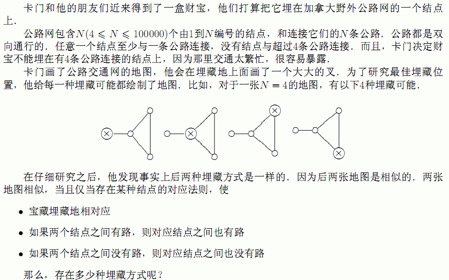

第1行输入N，之后N行每行输入一对整数，描述一条道路．

第1行输入N，之后N行每行输入一对整数，描述一条道路．
输出宝藏的埋藏方式种数．
4
1 2
2 3
3 1
1 4
INPUT DETAILS:
Here is a drawing of the roads and the intersections.
4---1---2
\ /
3
3
OUTPUT DETAILS:
The treasure can be buried at any intersection. However, burying it at
intersections 2 and 3 yields maps that are identical to each other. So the
total number of distinct treasure maps is 3.